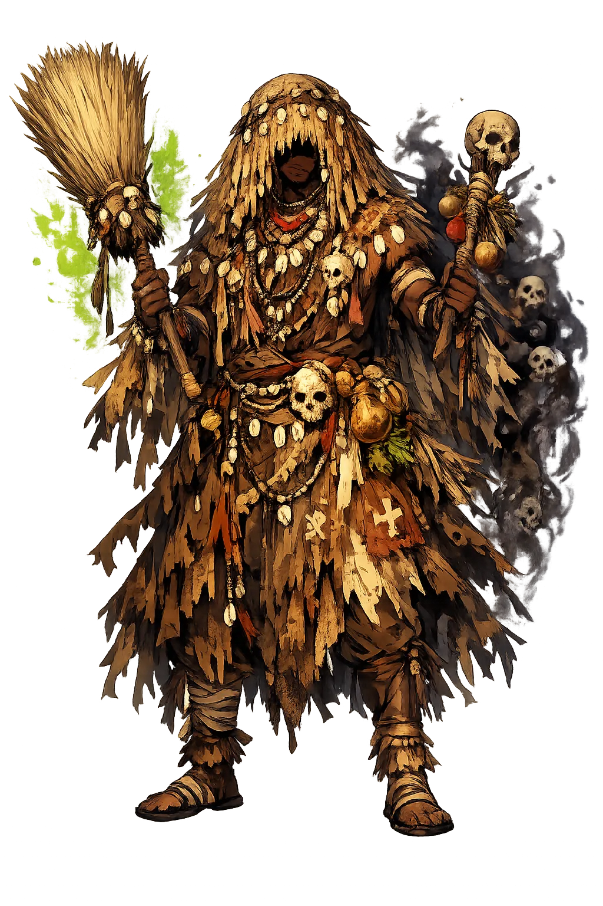

Stories of Ọbalúayé
Ọbalúayé's mythology is not a heroic cycle but an oral canon — Yoruba praise poetry carried across the Atlantic and kept in patakís, the teaching stories of Santería and Candomblé. The versions disagree in detail and agree in meaning: affliction is real, the earth sends it, and survival rightly borne becomes holiness.
In the most widely told patakís of the Cuban canon, Babalú-Ayé was not always a beggar. He was a king — some say the proudest of the orixás — who grew contemptuous of the sick, or hoarded the secrets of healing, until Olodumare's judgment fell on him: sores from the soles of his feet to the crown of his head, and exile from every door. Only the dogs stayed, licking his wounds, and in their rough tenderness lay the first medicine. Cast out, he walked the earth as the poorest of the poor, and the humiliation remade him: the god who had despised affliction became its master and its cure. His modern collectors — Mason in Four New World Yoruba Rituals, Murphy in Santería: African Spirits in America — record versions that differ in detail; all agree on the moral: the healer must know the body from inside affliction, and pride is the first disease he treats.
Dogs belong to Ọbalúayé on both continents because they live at the boundary he owns — between the village and the bush, the healthy and the sick, the living and the earth that takes them. In Yoruba teaching the dog runs ahead on paths men cannot see; in diaspora patakís it is the dog who leads the sufferer to the stream where the healing leaves grow, or who carries the message between the sick person's door and the orixá's. His devotees keep the image literally: two dogs stand beside the old man on crutches in every altar figure, and dog imagery runs through his beadwork and his cloth. The myth encodes the practical work of healing in an epidemic age — one must follow signs that do not speak in human language, keep low to the ground, and trust the guide that never strays far from the earth that sends both the sickness and the herb.
In Cuban Santería, Babalú Ayé appears as an old beggar at the crossroads, leaning on crutches, accompanied by dogs — and the image is liturgical as much as narrative. His feast falls on 17 December, the Catholic day of Saint Lazarus, and on that night tens of thousands of Cubans make the pilgrimage to the shrine of San Lázaro at El Rincón, many crawling the last distance on their knees, leaving offerings of roasted corn, dry wine, and herbs: the largest religious procession in the country. The beggar's shape is theology: illness can reduce anyone — king or scholar — to dependence, and dependence rightly borne is a form of holiness. The crossroads is his because sickness is a crossroads, the body at the point where the road forks toward death or back toward life, and his dogs are posted there to guide the choosing.
In Yorubaland the smallpox deity was spoken of with greater care than any other orisha. The safe title was Ọbalúayé — 'master of the world' — while the name Sọpọnná, attested in the Ifá corpus and early ethnography, was dangerous to say aloud during an epidemic, since naming the disease might summon it (Idowu, Olódùmarè; Bascom, Ifá Divination). When mission churches and colonial medical authorities attacked 'smallpox worship' in the early twentieth century, the cult went underground and re-emerged across the ocean, re-dressed as Babalú-Ayé beneath the cloak of Saint Lazarus. The concealment is itself the theology: the god of invisible killers keeps his name hidden, and survives by being renamed — a deity whose power is secrecy learned, under persecution, to live by it across an ocean.
Disease, Healing, and the Earth
Ọbalúayé is the orixá who both strikes and heals. He governs infectious disease — above all smallpox — and the earth that receives the body after death. The hand that sends sickness can also lift it, and those who survive what he sends become his healers. In the diaspora he walks as an old man on crutches, wrapped in burlap, with two dogs at his side.
Smallpox, leprosy, and epidemic illness walk in his shadow — he is the scourge no wall keeps out.
The same hand that sends illness can remove it; his priests are herbalists, and his broom sweeps sickness from the house.
He rules the soil that receives the dead and the smallest beings that break the body down.
Those who survive his illness often become his children for life — survival itself is the initiation.
From the original script to the living URL
Ọbalúayé
The name survives only in scholarly transliteration. Ọbalúayé is the standard Yoruba romanisation, documented in academic sources — “Father of the world”. Its acute stress marks preserve distinctions lost in plain ASCII.
No indigenous writing system is securely attested for individual yoruba names. The form shown is a modern scholarly transliteration.
babaluaye
Reduced to plain babaluaye, the name loses everything that made it specific: acute stress marks. What remains is an ASCII string that machines can parse but that no longer speaks with its original voice.
Ọbalúayé
The Unicode restoration recovers what ASCII flattened. Ọbalúayé restores acute stress marks, returning the name to its original written dignity. The domain encodes to Punycode, but the browser displays the truth.
Ọbalúayé.com → xn--balay-fsa0j098y.com
The non-ASCII characters in Ọbalúayé are encoded while the ASCII remains visible. To the DNS, it is Punycode. To humanity, it is Ọbalúayé.
Owned, ideal, and ASCII forms of Ọbalúayé
Ọbalúayé
The live temple domain — ọbalúayé.com.
babaluaye
The plain ASCII fallback — what DNS and legacy systems see.
How Ọbalúayé was spoken
How Ọbalúayé is preserved in writing
No indigenous writing system is securely attested for individual yoruba names. The form shown is a modern scholarly transliteration.
Contribute scholarly provenance →Ọbalúayé is the god nobody wants until they need him. He is smallpox scars, crutches, the cough that will not stop, the fever that empties the world. And yet he is also the one who knows the herb, the cool stream, the moment when the crisis turns.
Enter Extended Lore